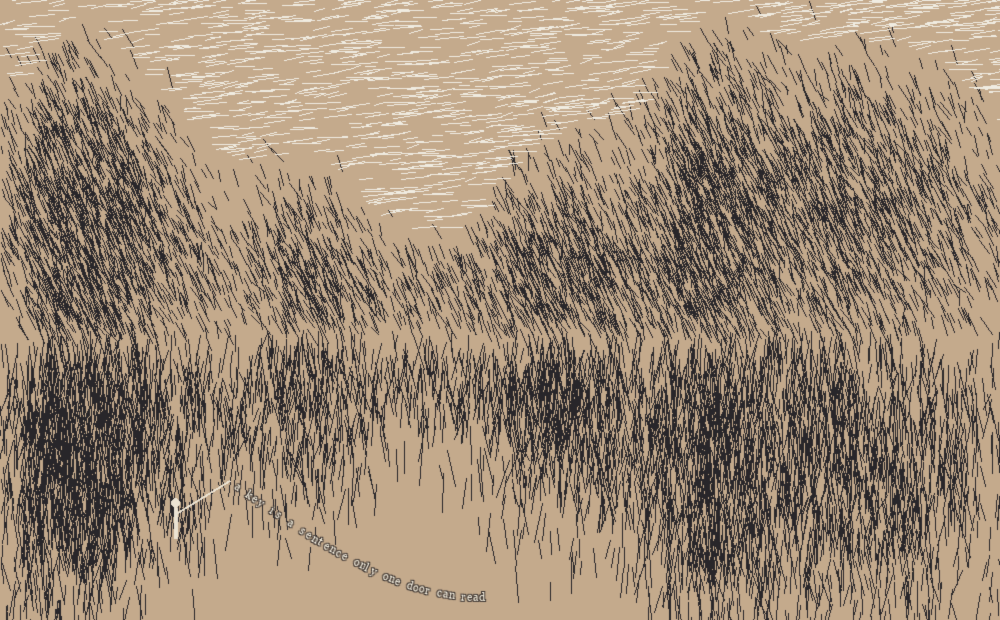
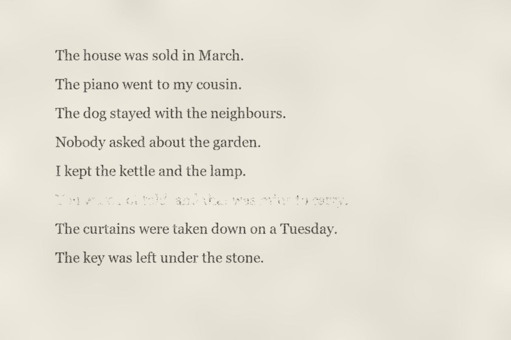
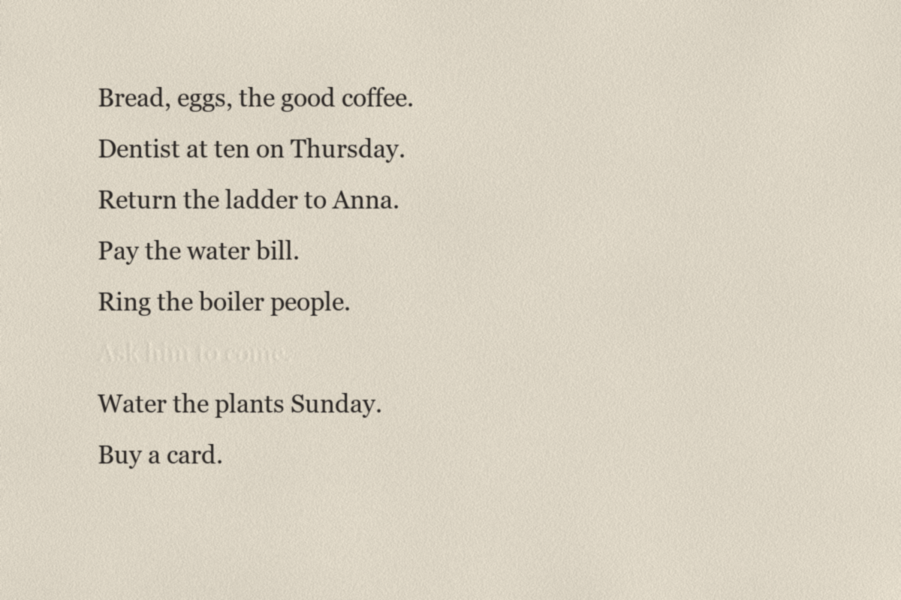
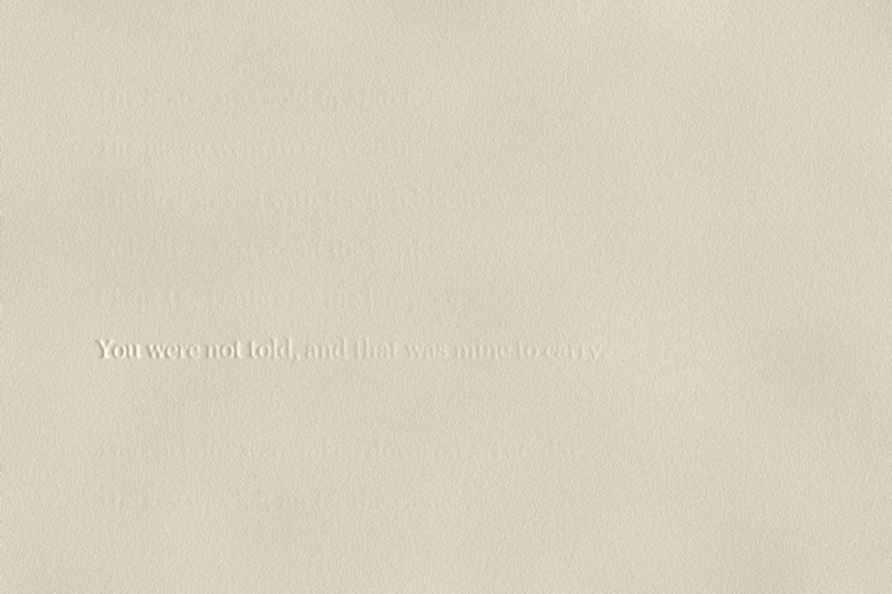

Hatch. A river between banks made of strokes. The fisherman is pale and nearly swallowed; his line, in light letters, is the only thing written whole: a key is a sentence only one door can read. (Written into every stroke instead, nobody can read it.)

Worn. Seven lines of an inventory and one that the paper has lost. You can tell it was the longest.

Pressed. Every line is there, and one more that was never inked. Tilt the page toward the light.

Under. The sheet that lay beneath Worn. It kept the beginning of the line the ink lost.